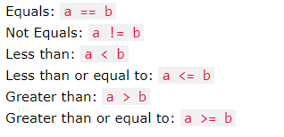
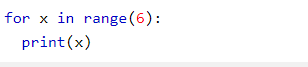

This course will make you learn the language in an enjoyable way. Programming examples will be associated with each topic. Project ideas will also be given accordingly to improve your project Development skills.
PythonPython is an interpreted, high-level, general-purpose programming language. It was created by Guido van Rossum, and released in 1991. Python was designed for readability, and has some similarities to the English language with influence from mathematics. Python uses new lines to complete a command, as opposed to other programming languages which often use semicolons or parentheses. Python relies on indentation, using whitespace, to define scope; such as the scope of loops, functions and classes. Other programming languages often use curly-brackets for this purpose.
Getting startedYou can download python from its official website:
Download PythonThe below program prints the string "Hello,World" on the screen.
print("Hello,World")
Download programWhere in other programming languages the indentation in code is for readability only, in Python the indentation is very important. Python uses indentation to indicate a block of code. Semicolon is not needed at the end of the statement as in C or other languages. It is optional.
Python VariablesThe variable names should not be keywords used in python. The names can only contain underscores and should not start with numbers.
a=10
b="hello"
print(a)
print(b)
Download programPython language supports the following types of operators.
1.Arithmetic Operators
2.Comparison (Relational) Operators
3.Assignment Operators
4.Logical Operators
5.Bitwise Operators
6.Membership Operators
7.Identity Operators
Attend the following Quiz to test yourself.
Python Quiz Part oneSolve the following Crossword puzzle to test yourself.
Python Crossword PuzzlePython supports the usual logical conditions from mathematics:
Python has two primitive loop commands:
They are :
1. while
2. for
while loop
for loop
A for loop is used for iterating over a sequence (that is either a list, a tuple, a dictionary, a set, or a string). This is less like the for keyword in other programming language, and works more like an iterator method as found in other object-orientated programming languages.
